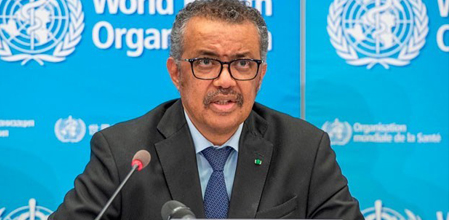

¿De dónde vino la COVID? Comienza la investigación de la OMS.
Identificar la fuente será complicado y los investigadores deberán lidiar con la delicada situación política.
|  |
Los primeros casos de COVID-19 estaban relacionados con un mercado de carne en Wuhan, China, pero las investigaciones no han encontrado muestras del coronavirus en los cadáveres. La Organización Mundial de la Salud (OMS) ha publicado su plan para investigar los orígenes de la pandemia de COVID. La búsqueda comenzará en Wuhan, la ciudad china donde se identificó por primera vez el nuevo coronavirus SARS-CoV-2, y se expandirá por China y más allá. Rastrear el camino del virus es importante para prevenir futuros derrames virales, pero los científicos dicen que el equipo de la OMS enfrenta una tarea abrumadora.
Autor: Smriti Mallapaty - 11/11/2020
La búsqueda comienza en Wuhan
La mayoría de los investigadores piensan que el virus se originó en los murciélagos, pero se desconoce cómo saltó a las personas. Otros coronavirus han pasado de un animal huésped intermedio; por ejemplo, el virus que causó un brote de síndrome respiratorio agudo severo (SARS) en 2002–04 probablemente llegó a las personas a partir de perros mapache ( Nyctereutes procyonoides ) o civetas. “Encontrar un animal con una infección por SARS-CoV-2 es como buscar una aguja en el pajar más grande del mundo. Es posible que nunca encuentren un 'murciélago humeante' ”u otro animal, dice Angela Rasmussen, viróloga de la Universidad de Columbia en la ciudad de Nueva York. "Será clave para los investigadores establecer una relación de colaboración con científicos y funcionarios gubernamentales en China". Determinar los orígenes de un virus puede llevar años, si es que se puede hacer, y la investigación también tendrá que navegar por la situación política altamente sensible entre China y Estados Unidos. El presidente de Estados Unidos, Donald Trump, lo ha estado "llamando virus de China y el gobierno chino está tratando de hacer todo lo posible para demostrar que no es un virus de China", dice Linfa Wang, viróloga de la Facultad de Medicina de la Universidad Nacional de Singapur de Duke. El juego de la culpa política ha significado que los detalles cruciales sobre la investigación en curso en China no se hayan hecho públicos, dice Wang, quien formó parte de la misión de la OMS que buscó el origen del SARS en China en 2003. Espera que la situación con la nueva administración estadounidense sea menos volátil. El presidente electo Joe Biden también ha dicho que revertirá la retirada de Trump de la OMS . El apoyo de China y Estados Unidos creará “un entorno mucho más positivo para realizar investigaciones en este campo”, dice Wang.
Planes a más largo plazo
Un equipo internacional de epidemiólogos, virólogos e investigadores con experiencia en salud pública, salud animal y seguridad alimentaria dirigirá la investigación COVID-19 de la OMS. La agencia no ha revelado sus nombres. El equipo celebró su primera reunión virtual, incluidos investigadores en China, el 30 de octubre, y está revisando la evidencia preliminar y desarrollando protocolos de estudio, dice la OMS. La fase inicial de las investigaciones en Wuhan probablemente la llevarán a cabo investigadores que ya se encuentran en China, y los investigadores internacionales viajarán al país después de revisar esos resultados, dice la agencia. En Wuhan, los investigadores observarán más de cerca el mercado de carne y animales de Huanan, que habían visitado muchas de las primeras personas diagnosticadas con COVID-19. El papel que jugó el mercado en la propagación del virus sigue siendo un misterio. Las primeras investigaciones tomaron muestras de cadáveres de animales congelados en el mercado, pero ninguna encontró evidencia de SARS-CoV-2, según un informe del 5 de noviembre sobre los términos de referencia de la misión de la OMS. Sin embargo, las muestras ambientales, tomadas principalmente de desagües y aguas residuales, dieron positivo para el virus. “Los estudios preliminares no han generado pistas creíbles para reducir el área de investigación”, afirma el informe. La misión de la OMS investigará los animales salvajes y de granja que se venden en el mercado, incluidos zorros, mapaches ( Procyon lotor ) y ciervos sika ( Cervus nippon ). También investigarán otros mercados en Wuhan y rastrearán los viajes de los animales a través de China y a través de las fronteras. Los investigadores darán prioridad a los animales que se sabe que son susceptibles al virus, como los gatos y los visones. El equipo también analizará los registros hospitalarios de Wuhan para averiguar si el virus se estaba propagando antes de diciembre de 2019.Los investigadores entrevistarán a las primeras personas identificadas con COVID-19, para averiguar dónde podrían haber estado expuestas, y realizarán la prueba. muestras de sangre del personal médico, técnicos de laboratorio y trabajadores agrícolas recolectadas en las semanas y meses previos a diciembre, en busca de anticuerpos contra el SARS-CoV-2. El informe reconoce que parte de este trabajo podría estar ya en marcha en China.